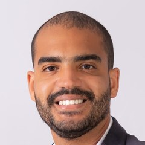

Início · Sobre
Dr. Danilo Borba: ortopedia com foco no ombro e no cotovelo.
Danilo de Castro Borba, ortopedista e traumatologista. CRM-BA 26852 · RQE 17241 (Ortopedia e Traumatologia) · TEOT 16090.

Apresentação
Como ele se apresenta
“Dr. Danilo Borba é formado em Medicina pela Escola Baiana de Medicina e Saúde Pública com residência médica e especialização em Cirurgia do Ombro e Cotovelo pelo Instituto de Ortopedia e Traumatologia (IOT) Passo Fundo Rio Grande do Sul. É membro da Sociedade Brasileira de Ortopedia e Traumatologia (SBOT), da Sociedade Brasileira de Cirurgia de Ombro e Cotovelo SBCOC.”
Perfil no corpo clínico do Instituto Leite · ver a fonte

Formação
Formação
- MedicinaEscola Bahiana de Medicina e Saúde Pública, em Salvador.
- Ortopedia e TraumatologiaTítulo de especialista (RQE 17241) e aprovação no 47º TEOT, a prova da SBOT, em 2018 (TEOT 16090).
- Ombro e cotoveloResidência médica e especialização em Cirurgia do Ombro e Cotovelo declaradas no Instituto de Ortopedia e Traumatologia (IOT) de Passo Fundo (RS).
Fontes: corpo clínico do Instituto Leite e página de boas-vindas da SBOT aos aprovados no 47º TEOT.
Registros
Título e registros
Ortopedia e Traumatologia
RQE 17241 — título de especialista registrado.
Registro
CRM-BA 26852.
SBOT
TEOT 16090; membro da Sociedade Brasileira de Ortopedia e Traumatologia.
SBCOC
Membro declarado da Sociedade Brasileira de Cirurgia de Ombro e Cotovelo.
Registro e RQE no localizador da Rede D'Or; TEOT e sociedades no corpo clínico do Instituto Leite.
Experiência
Rotina hospitalar
O histórico público do CNES registra o Dr. Danilo como ortopedista e traumatologista no Hospital da Bahia e no Hospital Municipal de Salvador desde 2018, no Hospital Ortopédico do Estado desde maio de 2024 e no Hospital Mater Dei Salvador desde setembro de 2024 (competência 09/2026).
Antes, o registro mostra passagens pelo Hospital Geral do Estado (2017–2020) e pelo Hospital Eladio Lasserre (2018–2019), além do início como médico clínico numa UPA de Salvador, em 2015.
Fonte: histórico profissional no CNES. O registro mostra o vínculo, não onde cada procedimento é feito.
Atuação
Áreas de atuação
Áreas listadas na ficha do Google e no localizador da Rede D'Or. Ombro e cotovelo são área de atuação e de formação dele; o título de especialista registrado é em Ortopedia e Traumatologia.
Dúvidas frequentes
Perguntas comuns
Onde o Dr. Danilo se formou?
Na Escola Bahiana de Medicina e Saúde Pública, em Salvador.
Ele tem título de especialista?
Sim, em Ortopedia e Traumatologia (RQE 17241), com aprovação no TEOT da SBOT em 2018.
Onde ele estudou ombro e cotovelo?
No Instituto de Ortopedia e Traumatologia (IOT) de Passo Fundo (RS), segundo o perfil no corpo clínico do Instituto Leite.
Agende
Ombro ou cotovelo incomodando? Comece pela consulta.
Atendimento com hora marcada no Centro Médico Empresarial Vitraux, Federação. Mande uma mensagem pelo WhatsApp (71) 98316-6062 e combine o dia da consulta.